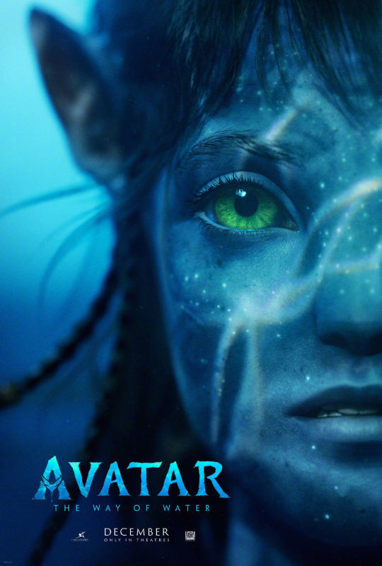

<ion-header>
  <ion-toolbar>
    <ion-title class="color-blue"  id="title2"></ion-title>
    <ion-buttons slot="end">
      <ion-button class="color-blue" fill="outline" [routerLink]="['/home']">home</ion-button>
    </ion-buttons>
  </ion-toolbar>
</ion-header>

<ion-content>
  <div class="container">
    <div class="content">
      <div class="title-image">
        <h1 class="custom-title">Avatar: The Way of Water</h1>
        
      </div>
      <div class="details">
        <div class="diretor-imdb">
          <p>Diretor: <span>James Cameron</span></p>
          <p>Imdb: <span>s/n</span></p>
        </div>
        <div class="genero-ano">
          <p>genero: <span>Ficção científica</span></p>
          <p>Ano: <span>2022</span></p>
        </div>
      </div>
    </div>
    <div class="button-bottom">
      <ion-button fill="outline" [routerLink]="['/one']">1</ion-button>
      <ion-button fill="outline" [routerLink]="['/two']" [disabled]="true">2</ion-button>
      <ion-button fill="outline" [routerLink]="['/three']">3</ion-button>
      <ion-button fill="outline" [routerLink]="['/four']">4</ion-button>
      <ion-button fill="outline" [routerLink]="['/five']">5</ion-button>
    </div>
  </div>
</ion-content>
